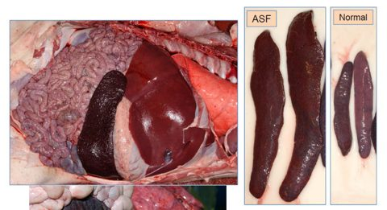
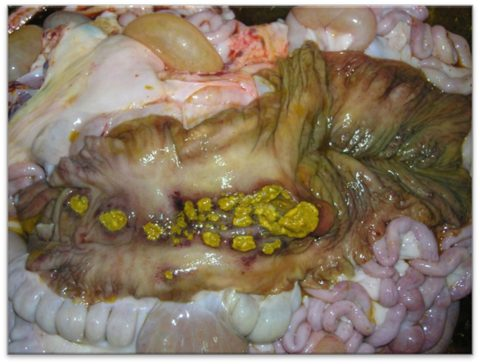
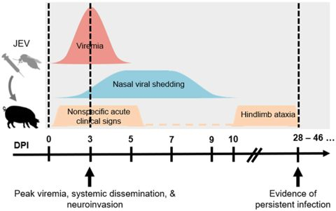
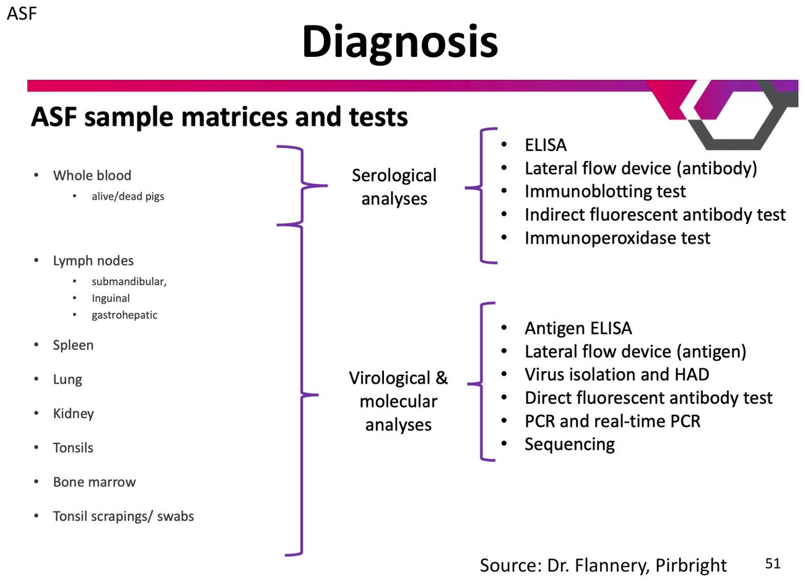

大方向與重點摘要
- 這章在講什麼
- 四個全身性或人畜共通相關的豬病毒病：非洲豬瘟（African swine fever, ASF）、古典豬瘟（Classical swine fever, CSF）、日本腦炎（Japanese encephalitis, JE）、E 型肝炎（Hepatitis E, HE）。前兩個是「發燒＋出血」的高致死率法定傳染病；後兩個是豬自己症狀輕微、對人類公共衛生重要的病。
- 為什麼重要
- 豬肉佔全球肉類攝取超過 35%。ASF 死亡率可達 100%、中國 2018 年疫情估計損失超過 1,000 億美元；CSF 在台灣是甲類傳染病，1997–98 年荷蘭疫情撲殺約 1,200 萬頭、損失超過 23 億美元；JEV 與 HEV 是人畜共通。張老師的題目常出在講義有畫底線的地方，本頁把那些內容標成「必考」。
- 這章要抓的重點
-
- ASFV：Asfarviridae、唯一經節肢動物傳播的 DNA 病毒、170–193 kb；24 個基因型；環境極穩定（4°C 血液 18 個月、冷凍屍體數年）；非人畜共通。
- ASF 傳播與致病：直接接觸、吃餿水豬肉、人車污染物、軟蜱（Ornithodoros）；標的是單核球與巨噬細胞；病毒血症 4–8 天，缺乏完全中和抗體。
- ASF 臨床與病變：最急性、急性、亞急性、慢性；脾臟腫大質脆暗黑、淋巴結出血、腎皮質點狀出血。
- ASF 診斷與防治：血球吸附（HAD）玫瑰花環、PCR、ELISA；新豬隔離 30 天；基因刪除活疫苗（越南 2022 年首例）；野豬的角色。
- CSFV：Pestiviridae、Orthopestivirus、有封套 RNA；單一血清型、3 個基因型；毒力分級；先天持續感染（late-onset CSF）。
- CSF 病變與診斷：脾臟邊緣梗塞、淋巴結周邊出血、腎膀胱點狀出血、迴盲瓣與腸道鈕扣狀潰瘍；FAVNT 為金標準；E2 次單位疫苗＋Erns ELISA（DIVA）。
- 台灣 CSF：1996 後田間病毒由 3.4 轉為 2.1；2006 年後田間無病毒；2023 年停止疫苗接種。
- 日本腦炎：Flaviviridae；豬是增幅宿主、人與馬是終端宿主；妊娠 60–70 天前感染才造成生殖障礙。
- E 型肝炎：豬無症狀；基因型 3、4 人畜共通；豬肝 HEV RNA 陽性率 24%；煮熟可不活化。
- 容易混淆
-
- ASF 是 DNA 病毒、CSF 是 RNA 病毒；兩者臨床相似但從未在同一頭豬分離到。
- CSF 先天持續感染豬看起來健康、驗不到抗體；產後持續感染是新生仔豬被感染。
- JEV：豬是增幅宿主，人與馬是終端宿主（不會傳給蚊子）。
- HEV 基因型 1、2 只感染人；3、4 感染人與豬；5、6 野豬；7、8 駱駝。
四個病的主線必考
| 疾病 | 病原 | 一句話特徵 | 代表圖 |
|---|---|---|---|
| ASF | ASFV（Asfarviridae，dsDNA，有封套） | 死亡率可達 100%；脾腫質脆暗黑；蜱與野豬 |  脾臟腫大質脆暗黑（p.45） |
| CSF | CSFV（Pestiviridae，(+)ssRNA，有封套） | 發燒＋出血；先天持續感染；台灣已根除 |  腸道鈕扣狀潰瘍（p.114） |
| JE | JEV（Flaviviridae，(+)ssRNA 約 11 kb） | 豬增幅宿主；妊娠 60–70 天前感染生殖障礙 |  豬感染經過時間軸（p.159） |
| HE | HEV（Hepeviridae，(+)ssRNA 約 7.2 kb） | 豬無症狀；人畜共通；豬肝 24% 陽性 | — |
內容以老師講義為主，章節順序跟講義一致；這頁是依新版格式重寫第 2 週，取代原本較精簡的版本。講義沒有附國考題；考古題來自你提供的 2019 年期中考（鄭益謙老師授課時期）。標「補充」的是講義以外的延伸。點任何「p.N」可在右側開啟講義對照。
豬病的衝擊 Impact of Swine Diseases
課程開場：為什麼豬的病毒病重要。
衝擊理解
- 養豬產業：豬是許多國家的主要收入來源；主要豬病全球擴散可對養豬業造成毀滅性衝擊。
- 生物多樣性與生態平衡：這些疾病不只影響家豬，也影響野豬。
- 食品安全與糧食安全：豬肉是動物性蛋白質的主要來源之一，佔全球肉類攝取超過 35%；主要豬病可威脅糧食安全，人畜共通豬病也造成食品安全風險。
非洲豬瘟：病毒、流行病學與環境抵抗力 ASF Virus & Epidemiology
非洲豬瘟（ASF）是家豬與野豬的高度傳染性病毒病，死亡率可達 100%；非人畜共通，但對養豬業與貿易衝擊極大。病毒在環境中極度穩定；人為活動在跨境傳播扮演重要角色。
全球疫情理解
- 1921 年肯亞首次；1960 年代基因型 I 傳到歐洲，1995 年多數地區以撲殺根除；2007 年喬治亞（基因型 II）再度跨洲傳播並持續擴散到亞洲。
- 非洲的傳播：疣豬—蜱—人為因素；歐亞：野豬、人為因素。
- 亞洲 2018–2019 年快速擴散到 20 個國家：主要影響小型養豬戶（數量多、生物安全低）；現在多數國家為地方流行，病毒在小型養豬戶間持續循環；已進入野豬族群（馬來西亞、菲律賓、寮國、越南）；越南等亞洲國家已使用疫苗（基因刪除減毒活疫苗）。
衝擊與易感動物必考
- 衝擊：高發病率與死亡率、高傳染力；進出口禁令、移動限制、隔離與撲殺（撲滅所必需）；古巴 1971 年撲殺 40 萬頭、羅馬尼亞 2018 年超過 12 萬頭；可能成為長期流行。
- 易感：家豬、野豬、歐亞野豬；疣豬（Warthog）與叢林豬（Bush pig）是儲存宿主（reservoir）；巨林豬（Giant forest hog）。
病毒必考
- Asfarviridae 科、Asfivirus 屬；大型有封套 DNA 病毒，170–193 kb。
- 唯一經節肢動物傳播的 DNA 病毒（Only arthropod-borne DNA virus）。
- 編碼超過 160 個基因；約 1/3 對細胞內複製非必要，但對逃避宿主防禦很重要。
- 病毒顆粒複雜：>68 種蛋白質、分多層。
- 24 個基因型（毒力不同：高毒力死亡率可達 100%，低毒力僅血清轉陽）；所有基因型都存在於非洲，基因型 I 與 II 已傳到非洲以外。
環境抵抗力必考
| 環境／介質 | 存活時間 |
|---|---|
| 糞便（室溫） | 數日 |
| 污染的豬舍 | 數個月 |
| 血液（4°C） | 長達 18 個月 |
| 部分豬肉製品（如鹽漬風乾火腿） | >140 天 |
| 冷凍屍體 | 數年 |
對低溫特別有抵抗力。
病毒去活化必考
- 血清與糞便會大幅抑制消毒劑效果，所以施用消毒劑前徹底清潔很重要。
- 非多孔表面的消毒劑：次氯酸鈉、檸檬酸、部分碘與四級銨溶液。
- 肉品與組織：70°C（150°F）30 分鐘可不活化。
- pH <3.9 或 >11.5 可不活化；有血清存在時需更高的 pH（13.4）。
非洲豬瘟：傳播與致病機轉 Transmission & Pathogenesis
傳播要分「直接、間接、媒介」三條路；致病的關鍵是標的細胞與病毒血症。
傳播的主要來源必考
- 感染的家豬與野豬、污染的飼料、人員、車輛與豬肉是 ASF 感染的主要來源。
- 直接接觸感染豬：主要經口鼻途徑；病毒存在於分泌物、排泄物、組織，特別是血液。
- 吃入受污染的豬肉製品：餵豬的餿水、廚餘與垃圾。
- 接觸感染的屍體。
- 污染物（fomites）：衣物、車輛、器具；環境污染（血液、下痢、糞便）。
- 媒介：生物性：軟蜱（Ornithodoros）叮咬；機械性：其他昆蟲（螫蠅 Stomoxys）。
軟蜱與傳播循環必考
- Ornithodoros 軟蜱：蛻皮間（transstadial）、經卵（transovarial）、性（sexual）傳播；終生感染；族群可維持病毒數年。
- 蜱傳豬：在非洲重要；病毒維持在疣豬與蜱之間（成年疣豬多為終端宿主、不參與水平或垂直傳播）。
- 歐亞地區以野豬—野豬、家豬—野豬、餿水與生物安全不足為主。
致病機轉必考
- 原發複製部位：最接近入侵點的淋巴結的單核球與巨噬細胞。
- 初級複製：口鼻暴露時，先涉及扁桃腺與下頜淋巴結的單核球與巨噬細胞。
- 次級複製：經血液和／或淋巴系統散播到淋巴結、骨髓、脾、肺、肝、腎。
- 病毒血症通常在進入後 4–8 天開始，因為缺乏完全中和抗體，可持續數週至數月。
補充：學長姐筆記（不是本年度講義）另寫到病毒也會複製於內皮細胞、肝細胞、腎小管上皮與嗜中性球，並造成血球吸附（HAD）、淋巴球凋亡（淋巴球減少）與肺泡水腫；這些是延伸資訊，本年度講義沒有寫。
發病率與死亡率必考
- 發病率最高 100%（先前未暴露的豬群）。
- 死亡率依基因型與毒力而異，<5% 到 100%；亞急性型 30–70%。
- 所有年齡都受影響。
- 非洲野生豬可能無症狀或輕微感染。
非洲豬瘟：臨床症狀與病變 Clinical Signs & Lesions
ASF 與 CSF 最大的區別之一是脾臟：ASF 是腫大、質脆、暗黑。
四種病程型式必考
| 最急性 Peracute | 急性 Acute | 亞急性 Subacute | 慢性 Chronic | |
|---|---|---|---|---|
| 體溫 | >41°C | 40–42°C | 發燒 | 間歇性低燒 |
| 症狀 | 食慾不振、沉鬱、皮膚充血 | 厭食、昏睡、虛弱、躺臥；紅斑、發紺；耳與側腹皮膚出血；下痢、流產；呼吸困難、鼻漏 | 與急性相似但較輕；流產、發燒、紅斑、發紺 | 厭食、沉鬱、消瘦、發育遲緩、咳嗽、關節腫、下痢、偶爾嘔吐、皮膚病灶 |
| 死亡 | 出現症狀後 1–4 天；常是豬群感染的第一個徵兆；多見於未暴露族群 | 死亡率 90–100%；症狀後 7–10 天 | 30–70%（中等毒力株） | 可能致命 |
潛伏期：直接接觸後 4–19 天；蜱咬後 <5 天。
大體病變必考
- 主要病變在脾臟、淋巴結、腎臟、心臟；多個內臟出血；皮膚變色與出血；血樣下痢或內出血徵象。
- 脾臟：腫大（enlarged）、質脆（friable）、暗黑（darkened）。
- 淋巴結：腫脹、出血。
- 腎臟：皮質與切面點狀出血（petechiae）；可能有腎周水腫。
- 其他器官：出血、點狀出血、瘀斑；肺、膽囊水腫；腦與腦膜鬱血、水腫。
慢性感染的病變理解
局部皮膚壞死、皮膚潰瘍、肺實質化、乾酪性肺炎、纖維素性心包炎、胸膜沾黏、淋巴結腫大、關節腫脹。
非洲豬瘟：鑑別診斷、診斷與防治 DDx, Diagnosis & Control
ASF 沒有可靠的全球性疫苗，防治靠生物安全、早期偵測與撲殺。
鑑別診斷：全身性敗血症與出血性疾病必考
- 古典豬瘟（CSF）、急性 PRRS、PCVAD、假性狂犬病、豬丹毒、沙門氏菌症、放線桿菌症、Glässer 病、附紅血球體症（Eperythrozoonosis）、血小板減少性紫斑、華法林中毒、重金屬中毒（Iowa State 2018）。

診斷：抗原必考
- 病毒分離與血球吸附（HAD）：ASFV 在豬周邊血液的初代白血球培養感染並複製；接種到豬源的感受性初代細胞（單核球、巨噬細胞）；產生 CPE（血球吸附與細胞溶解）；感染的巨噬細胞上吸附豬紅血球形成「玫瑰花環」（Rosettes）。
- 此試驗專一性高：只有 ASFV 能在白血球培養中造成血球吸附；需要初代細胞培養；並非所有 ASFV 株都有血球吸附；試驗時間 3–10 天；病毒分離與 HAD 鑑定建議作為確認陽性結果的參考試驗。
- PCR：臨床樣本、腐敗樣本、新鮮組織／血液皆可。
診斷：抗體必考
- 篩檢試驗：ELISA。
- 確認試驗：免疫墨點（IBT）、間接螢光抗體（IFAT）、間接免疫過氧化酶（IPT）。
預防與控制必考
- ASF 疫苗現已在部分國家獲准使用，但尚無廣泛接受的全球性解決方案；基因刪除減毒活疫苗是目前最先進的方式，但安全性與效力需審慎評估。
- 無 ASF 國家：靠適當的進口政策與場內嚴格生物安全，確保活豬與豬肉製品都不被引入；早期偵測監測。
- 預防直接傳播：隔離病豬；防止接觸野豬（可能時室內飼養）；新購入豬至少與豬群隔離 30 天。
- 預防間接傳播：不要餵未煮熟的豬肉製品（餿水、廚餘、垃圾）；消毒車輛、器具、鞋與衣物；適當處理糞便與屍體；避免在接觸家豬前打獵野豬。
- 預防媒介傳播：控制蜱與其他昆蟲媒介（流行區可能困難）。
- 爆發時控制：場區隔離（quarantine）、通報主管機關、移動限制、調查、快速診斷、確定病毒來源。
- 清除：安樂死／撲殺感染與接觸動物；適當處理屍體避免擴散；清潔消毒；移動管制與隔離；避免接觸野豬。
野豬的角色必考
在歐洲與亞洲部分地區，野豬在 ASF 傳播扮演重要角色。管理野豬族群、減少與低生物安全養豬系統的接觸，以及有效的野豬監測與管理，是防控的關鍵。
疫苗理解
- 基因刪除減毒活疫苗是最有前景的方法之一；各疫苗策略（死毒、減毒、重組、次單位、核酸）各有優缺點；挑戰：基因型多樣、需初代細胞培養、同源 vs 異源保護、非洲基因型擴散。
- 越南：2022 年 6 月全球首個核准商業 ASF 疫苗；共 3 種減毒活疫苗（2022、2023、2025 年核准）；已納入國家 ASF 控制策略。菲律賓：AVAC ASF LIVE 先受控使用、2026 年 9 月核准商業販售（目前用於肥育豬）。印尼：2025 年 4 月緊急使用核准。
- 非洲監測：監測野豬與蜱的各基因型、找出新基因型或現有基因型傳到非洲以外的跡象。
- 基因型 I 與 II 重組株：依 B646L 基因分類為基因型 I，但有 10 個片段來自基因型 II；基因型 II 減毒活疫苗對重組株攻毒沒有保護力，是全球養豬業的新挑戰。
- ASF 是嚴重的非人畜共通病，可造成極高死亡率與重大經濟與貿易損失。
- 環境持久性與人為移動的污染豬肉、污染物與車輛是控制的主要挑戰。
- 野豬可維持 ASFV 循環，使根除困難許多。
- 早期偵測、快速診斷、移動管制、撲殺與嚴格生物安全仍是防控基礎；疫苗是新興的額外工具。
古典豬瘟：病毒、流行病學與傳播 CSF Virus, Epidemiology & Transmission
古典豬瘟（CSF）是豬的高度傳染性疾病，常造成感染豬死亡；主要特徵是發燒與出血。在台灣列為甲類傳染病。
概論與疫情必考
- 易感：家豬與野豬。死亡率可高達 100%，越年輕感染死亡率越高。
- 症狀：高燒、沉鬱、神經症狀、流產；可造成豬免疫抑制。
- 全球清淨狀況（WOAH 2025 年 6 月）：39 個會員國認定為 CSF 清淨國，包含台灣、美國、加拿大、紐西蘭、澳洲與大部分歐洲。
- 荷蘭 1997–1998 年：超過 400 場感染、約 1,200 萬頭撲殺、損失超過 23 億美元。
- 潛伏期 2–15 天；臨床期：急性型 10–15 天；慢性、先天、產後型數週到數月。
病毒必考
- CSFV 是有封套的 RNA 病毒，屬 Pestiviridae 科 Orthopestivirus 屬（ICTV 名稱 Pestivirus suis）。
- 單一血清型；三個基因型。
- 與 BVDV（Pestivirus A、B，牛、豬皆可感染）、BDV（Pestivirus D，羊）、APPV（非典型豬瘟病毒，Pestivirus K，造成新生仔豬先天性顫抖 A-II 型）同屬。
基因型必考
| 基因型 | 內容 |
|---|---|
| I | 古老病毒株與傳統減毒活疫苗株 |
| II | 1980 年代以來流行的病毒株 |
| III | 特定地區特有：台灣、南韓、日本、泰國、英國 |
歐亞國家田間流行的 CSFV 已由原本的基因型 I 或 III 轉為基因型 II。
毒力分級必考
| 毒力 | 表現 |
|---|---|
| 高毒力 | 急性病程，幾乎所有感染豬都會死 |
| 中毒力 | 亞急性或慢性感染 |
| 低毒力 | 亞臨床感染，通常對胎兒致病 |
| 無毒力 | 疫苗株 |
環境抵抗力與去活化必考
| 條件 | 內容 |
|---|---|
| 溫度 | 4°C 存活 6 週；20°C 2 週；37°C 7–15 天；50°C 3 天；冷藏肉可存活數個月、冷凍肉數年 |
| pH | pH 5–10 穩定；<3 或 >11 被不活化 |
| 消毒劑 | 有機溶劑（乙醚、氯仿）；2% 氫氧化鈉；1% 福馬林 |
| 加熱 | 65.5°C 超過 30 分鐘；71°C 1 分鐘 |
傳播必考
- 口：豬吃入受污染食物或舔舐被污染的環境。
- 直接：接觸感染豬，病毒可經傷口或黏膜（眼、鼻、口）進入。
- 環境污染：病毒經分泌物、血液、唾液、尿或糞便排入環境，經其他動物或車輛散播。
- 飛沫：短距離。
- 生殖系統：公豬配種經精液，或母豬懷孕時感染胎兒。
古典豬瘟：致病、臨床型式、病變與診斷 Clinical Forms, Lesions & Diagnosis
CSF 最難的是「先天持續感染」：豬看起來健康、驗不到抗體、持續排毒。
四種臨床型式必考
| 型式 | 誰感染 | 臨床特徵 |
|---|---|---|
| 急性 | 高毒力株／幼豬 | 高燒 >41°C、沉鬱、發紺、結膜炎、便秘後下痢、神經症狀、流產、高死亡率 |
| 慢性 | 低毒力株／部分免疫豬場 | 發燒、食慾不振、消瘦、生長遲緩；感染後 2–3 個月死亡；無法產生有效免疫反應；可能外觀健康；在整個臨床期排毒直到死亡 |
| 先天持續感染 | 母豬懷孕期感染 | 死產或虛弱小仔豬；母豬於懷孕中期（50–70 天）感染，所生仔豬可能有持續性病毒血症 |
| 產後持續感染 | 新生仔豬被感染 | 免疫抑制：未成熟免疫系統無法產生抗體；可能臨床健康或非典型症狀；可存活數個月最終死亡；無適應性免疫下高度複製排毒 |
先天持續感染（Late-onset CSF）必考
- 母豬感染 → 經胎盤傳給胎兒；結果依病毒株毒力與懷孕感染時間而異：死產或出生虛弱小仔豬。
- 免疫耐受（Immunotolerance）：胎兒免疫系統未成熟，無法辨識病原、無法產生抗體。
- 感染豬可能外觀健康或非典型症狀；可存活數個月，最終死亡；終生排毒；可能驗不到抗體；疫苗效果差；病毒持續存在環境。
期中考古（合卷 Part A Q2）問「如何在常在型地區設計新型態疫苗與診斷」，同時要「區別野外感染與疫苗接種」：先天持續感染豬驗不到抗體，更說明了 DIVA 與抗原檢測的必要。
大體病變必考
- 淋巴結周邊出血（Peripheral hemorrhage of lymph node）。
- 脾臟梗塞（Infarction of spleen）。
- 腎、膀胱與其他器官點狀出血（Petechial hemorrhage in kidney, bladder, and other organs）；睪丸也可見。
- 扁桃腺壞死；迴盲瓣潰瘍；胃腸道黏膜鈕扣狀潰瘍（button ulcers）。
鑑別診斷必考
- ASF、PRRS、PCVAD、假性狂犬病、細菌性敗血症（豬丹毒、沙門氏菌症）、旋毛蟲症（Trichinellosis）。
- ASF vs CSF（德國）：中等毒力 ASFV 的症狀已不像典型的大量血樣腹瀉與脾腫大；攻毒試驗顯示 ASFV 與 CSFV 引起的臨床症狀非常相似；ASFV 與 CSFV 從未在同一頭豬分離到。
診斷：抗原必考
- 病毒抗原檢測：病毒分離（細胞培養）；核酸偵測（核酸擴增與定序分析）。
- 診斷樣本：扁桃腺、脾、淋巴結、腎、腦、迴盲瓣、血液。
- RT-PCR：核酸擴增＋電泳約 4 小時；定序 1 天。qRT-PCR：可分辨不同基因型；約 2 小時；高敏感與特異；可區分疫苗株與野外株。
診斷：抗體必考
- 病毒中和試驗：中和抗體效價為造成 50% 螢光抑制的血清最高稀釋倍數。
- FAVNT（螢光抗體病毒中和試驗）＝金標準：步驟繁瑣（需細胞培養與病毒操作）；耗時 3 天。
- ELISA：步驟簡單（不需細胞培養與病毒操作）；快速（半天）；需評估與中和抗體的相關性；用於評估族群免疫狀態；有商業套組。
其他瘟病毒與交叉反應理解
- APPV（非典型豬瘟病毒）：與新生仔豬先天性顫抖 A-II 型有關。
- BVDV 感染豬：通常沒有臨床症狀、可能無或輕微病變；感染來源通常是接觸牛或其他反芻動物；豬用疫苗原料可能被 BVDV 污染。
- 瘟病毒間的血清交叉反應：要判斷 CSFV 與其他瘟病毒的中和抗體效價有沒有交叉反應（講義附 Meyer et al., 2021 表）。
古典豬瘟：防治、DIVA 疫苗與台灣 CSF Control, DIVA & CSF in Taiwan
CSF 防治的核心：疫苗、監測、生物安全；台灣是「長期監測＋階段性停打疫苗」成功根除的案例。
防治三支柱與疫苗必考
- 防治三支柱：疫苗接種、監測、生物安全措施。
- 減毒活疫苗：對田間株提供完全保護。次單位疫苗：可區分感染與接種豬（DIVA）。
- 疾病流行（endemic）地區：疫苗可預防疾病擴散；DIVA 疫苗被認為是未來控制與根除 CSF 的可行選項。
- 無疾病地區：撲殺政策（stamping out）＝早期偵測、移動管制、清潔消毒；已使北美與大部分西歐根除 CSF。
複選第 3 題：「使用活毒疫苗免疫需注意 maternal antibody 的影響（對）」「使用減毒疫苗時，不易藉血清學區分是否有野外毒感染（對）」「應用豬瘟 E2/subunit 疫苗搭配檢測 Erns 抗體以區分野外感染（對）」；「Stamping out without vaccination 有助於迅速成為 free status」考卷上沒有圈選，原因講義沒寫。2022 年同一題把題幹改成「何者不正確」，答案只剩這個選項，兩卷互相印證它被出題者當成錯誤敘述（見期中考古）。
歐盟核准的 DIVA 疫苗必考
| 疫苗 | 內容 |
|---|---|
| 嵌合活疫苗（Chimeric live vaccine, CP7_E2alf）（Suvaxyn CSF Marker, Zoetis） | BVDV 骨架、E2 基因換成 CSFV 的 E2；兼具減毒活疫苗優點並可區分感染與接種；搭配 CSFV Erns ELISA；緊急疫苗庫 |
| E2 次單位疫苗（Porcilis Pesti, MSD） | 搭配 CSFV Erns ELISA |
CSFV Erns ELISA 的限制：敏感度與特異度差；BVDV 與 BDV 的 Erns 抗體可能交叉反應造成偽陽性；只適合族群篩檢。
讀書補充Note - DIVA 是什麼？
先講結論
DIVA ＝ Differentiating Infected from Vaccinated Animals，「區分是被野外病毒感染、還是打過疫苗」的動物。打過疫苗的豬也有抗體，一般抗體檢驗分不出來；DIVA 讓兩種豬在檢驗上看得出差別。講義在第 2 週（豬瘟）與第 4 週（口蹄疫）都有講；下面的比喻與整理是補充。
1. 為什麼需要 DIVA
- 一般疫苗（例如 LPC 減毒活疫苗）打下去，豬產生的抗體和野外感染一樣，抗體陽性時不知道是打過疫苗還是真的感染。
- 這讓監測疫情、證明是非疫區變得很困難；台灣豬瘟最後也是靠階段性停打疫苗才證明根除（講義）。
- DIVA 讓你可以一邊打疫苗保護豬群，一邊抓出真正被感染的豬。
2. 怎麼做到：「少一塊」的原理
- 講義：DIVA 要「DIVA 疫苗＋DIVA 檢驗」搭配，並選一個標記抗原：自然感染時抗原性好、持續久；打疫苗時因為疫苗故意沒有這個抗原，不會產生它的抗體。
- 檢驗專門驗這個抗原的抗體：有＝真的被感染過；沒有＝只打過疫苗。
- 比喻（補充）：疫苗是「故意少一塊拼圖」的病毒零件，野外病毒是完整的一組；驗那塊拼圖的抗體，就知道豬見過的是哪一種。
3. 實例
- 豬瘟：E2 次單位疫苗、或 CP7_E2alf 嵌合疫苗（BVDV 骨架換上 CSFV 的 E2）都沒有 CSFV 的 Erns → 驗 Erns ELISA（講義；2019 期中考）。Erns ELISA 敏感度與特異度差、會和 BVDV／BDV 交叉反應，只適合族群篩檢。
- 口蹄疫：不活化疫苗只有結構蛋白，沒有非結構蛋白（NSP） → 驗 NSP（如 3A3B）抗體（講義；109 年國考）。
- 假性狂犬病：gE 基因缺失疫苗 → 驗 gE ELISA（講義；111、115 年國考）。
- PRRS：目前沒有可靠的 DIVA（111 年國考）。
4. 國考怎麼考
- 111 年：哪些病已有 DIVA → 豬瘟、口蹄疫、假性狂犬病（PRRS 沒有）。
- 109 年：口蹄疫使用疫苗地區，要驗非結構性蛋白抗體判定是否有野外感染。
- 115 年：「全場疫苗接種、DIVA 篩選、淘汰」達到全場清淨的是假性狂犬病（該份試卷官方答案缺，依知識判斷）。
- 111 年：已廣泛使用基因缺損疫苗預防的是假性狂犬病。
- 2019 期中考：「E2 次單位疫苗搭配檢測 Erns 抗體可區分野外感染」「使用減毒疫苗時不易用血清學區分野外感染」都是正確敘述。
5. 要背到什麼程度
- 一定要會
- DIVA 的意思；三個配對（CSF＝E2 疫苗＋Erns、FMD＝NSP、PR＝gE 缺失＋gE ELISA）；PRRS 沒有可靠 DIVA。
- 懂原理就好
- 「疫苗故意少一塊、驗那一塊的抗體」；為什麼一般減毒疫苗做不到 DIVA。
- 不用背
- CP7_E2alf、Porcilis Pesti 等疫苗商品名。
6. 記憶小技巧（補充）
- 「少一塊、驗那塊」：疫苗少哪個抗原，就驗哪個抗原的抗體。
- 「瘟 E（rns）、蹄 N（SP）、狂 g（E）」：豬瘟驗 Erns、口蹄疫驗 NSP、假性狂犬病驗 gE。
監測與野豬必考
- 監測：抗體檢測評估疫苗誘發的族群免疫；抗原檢測監測疫情。
- 野豬：在歐洲與日本部分地區扮演傳播角色；日本野豬的遷徙使控制困難；日本以口服餌疫苗（地面埋設）控制野豬 CSF。
台灣 CSF（國考與考古必備）必考
- 1996 年後田間病毒由 3.4 型轉為 2.1 型。
- 基因型 2.1 與 3.4 都是中等毒力；LPC 疫苗對兩者都有保護。
- 2006 年後田間未再檢出病毒。
- 2023 年起停止疫苗接種。
- CSF 是高傳染力、非人畜共通的豬病毒病，臨床結果多樣。
- 有效疫苗可提供快速保護，但接種會使監測與根除複雜化。
- 成功根除需要疫苗策略、監測、診斷、移動管制與審慎規劃的停打疫苗。
- 台灣示範了長期監測與階段性停止疫苗接種可成功根除疾病。
日本腦炎 Japanese Encephalitis
JEV 的核心：豬是增幅宿主，人與馬是終端宿主；豬本身多為亞臨床，臨床意義是母豬生殖障礙。
簡介與病毒必考
- 1933 年在日本鑑定為病原，後從 Culex tritaeniorhynchus 蚊子分離。JEV 是人類病毒性腦炎的主要原因，也可造成馬致死性腦炎；在豬造成生殖障礙，偶爾造成仔豬神經疾病。
- Flaviviridae 科 Orthoflavivirus 屬（舊稱 Flavivirus）；(+)ssRNA 約 11 kb；蚊媒，與登革熱、黃熱病、西尼羅病毒同屬。
- 不活化：3 mM binary ethylenimine、3–8% paraformaldehyde、2% glutaraldehyde、1% 次氯酸鹽、乙醇、異丙醇、0.05% Tween 20；pH 重要；熱不活化點 40°C，血清或培養基中的病毒可在 56°C 加熱 30 分鐘不活化。
公共衛生必考
- 全球每年估計約 10 萬臨床病例，超過 30 億人生活在風險地區；約 75% 發生在 15 歲以下兒童。
- 通常認為豬的病毒增幅先於疫情傳播；但人類流行也可能在沒有大量或高密度豬隻的地方發生。
流行病學必考
- JEV 是人畜共通病毒，在自然界由涉及 Culex 蚊的傳播循環維持；脊椎宿主為野生與家禽鳥類與豬。
- 人與馬被感染的蚊子叮咬而感染，但是偶發的終端（dead-end）宿主。
基因型必考
- 單一血清型；五個基因型。
- 基因型 I：柬埔寨、中國、韓國、泰國北部、越南、日本、印度、澳洲、台灣。
- 基因型 II：印尼、馬來西亞、泰國南部、巴布亞紐幾內亞、澳洲。
- 基因型 III：廣泛分布於亞洲，如日本、中國、韓國、台灣。
- 基因型 IV：只在印尼；基因型 V：馬來西亞、中國、韓國。
- 近幾十年來，基因型 I 在許多地區取代了基因型 II 與 III。
傳播與增幅必考
- 豬是 JEV 的主要增幅宿主，在地方流行與流行爆發區扮演重要角色。
- 豬感染後有高效價病毒血症，通常持續 2–4 天，足以感染蚊子。
- 豬的病毒效價一致高於其他家畜或野生動物，是地方流行區病毒傳播的敏感指標。
- 野生鳥類，特別是鷺科（ardeid）被認為是 JEV 的重要維持宿主，流行時也可能是增幅者。
致病機轉必考
- 黃病毒感染始於被感染蚊子的叮咬；豬之間的接觸傳播也可能很重要。
- 病毒最早在感染後 3 天就可到達中樞神經系統；新生與幼齡動物比成年動物更容易發生嚴重 CNS 感染。
- 豬的 JEV 感染通常是亞臨床感染伴病毒血症；可感染神經元造成腦膜腦炎與神經症狀；經胎盤感染胎兒，造成流產、死產、木乃伊化與新生仔豬死亡；也可感染公豬睪丸組織造成不孕。
臨床表現必考
- 懷孕母豬或後備母豬最常見的表現是生殖障礙：流產，窩中有死產、木乃伊胎，或活的虛弱仔豬。
- 母豬在妊娠 60–70 天以前感染 JEV 才會發生生殖障礙；懷孕後期感染通常對胎兒影響很小或沒有。
- 公豬：不孕；睪丸水腫、鬱血，精蟲活動力下降、精子異常；這些影響通常是暫時的，大多數完全恢復。
大體與顯微病變必考
- 母豬：生殖障礙的母豬沒有特徵性病變。
- 公豬：鞘膜與副睪增厚，副睪、鞘膜與睪丸水腫與發炎。
- 死產或虛弱仔豬：常有腦水腫（hydrocephalus）、皮下水腫、小腦發育不全、脊髓髓鞘形成不全。
- 顯微：感染仔豬瀰漫性非化膿性腦炎，特徵為腦與脊髓神經元壞死與血管周圍袖套。
鑑別診斷必考
造成流產、木乃伊胎或死產，以及 6 個月內豬腦炎的病原：假性狂犬病、CSFV、PRRS、血球凝集腦脊髓炎病毒、Rubulavirus（藍眼副黏液病毒）、Menangle 病毒、豬鐵士古病毒、豬小病毒、布氏桿菌症、食鹽中毒。
診斷必考
| 樣本 | 用途 |
|---|---|
| 胎盤與胎兒組織 | 生殖病例 |
| 腦、脾、肝、扁桃腺 | 病毒／RNA 偵測 |
| 全血 | 早期病毒血症病毒偵測 |
| 血清 | 血清學與早期病毒偵測 |
| 配對血清（間隔 2–4 週） | 證明血清轉陽 |
- 抗原偵測：病毒分離、RT-PCR、免疫組織化學（IHC）。抗體偵測：ELISA、IFA、病毒中和試驗（VN）。
免疫理解
豬在實驗感染近緣黃病毒（如西尼羅病毒）後，觀察到交叉中和抗體反應；在黃病毒高度流行區，豬先前感染近緣黃病毒的交叉反應免疫可能抑制後續 JEV 感染。
預防與控制必考
- 疫苗：不活化（鼠腦來源）或減毒活疫苗已在日本、台灣、尼泊爾、韓國用於預防病毒增幅或生殖疾病；減毒活疫苗比不活化疫苗對自然與實驗感染更有效。
- 基因型 I 在亞洲大部分地區興起，引起對基因型 III 為基礎疫苗效力的擔憂：GIII 減毒活疫苗預防 GI 病毒造成的死產與流產，效果比對 GIII 病毒低（Fan et al., 2022）。
- 蚊子管理：除非豬養在無蚊環境，否則預防豬暴露於感染蚊子通常不實際；為公共衛生在養豬場附近進行的蚊子管理與控制計畫，也可能減少蚊子叮咬與豬感染。
- JEV 是蚊媒的人畜共通病毒，豬是主要增幅宿主。
- 豬的感染多為亞臨床，但可造成生殖障礙，偶爾造成幼豬神經疾病。
- 人與馬是終端宿主，對病毒增幅沒有明顯貢獻。
- 疫苗與蚊子控制是重要預防措施；基因型轉換可能影響疫苗表現。
E 型肝炎 Hepatitis E
HEV 在豬身上幾乎沒有臨床意義，重點在人畜共通與食品安全。
簡介與病毒必考
- HEV 是人類 E 型肝炎的病原，在亞洲與非洲許多開發中國家是重要公共衛生問題；在美國與許多歐洲工業化國家也是地方流行。
- 豬的 HEV 在豬只造成顯微的肝炎病變，沒有臨床症狀，但經直接接觸感染豬與吃未煮熟的豬肉或豬肉製品對人有人畜共通風險。
- Hepeviridae 科；豬 HEV 的基因體是(+)ssRNA 約 7.2 kb。
| 基因型 | 感染對象 |
|---|---|
| HEV-1、HEV-2 | 僅限人類 |
| HEV-3、HEV-4 | 人、豬與其他物種（人畜共通重要基因型） |
| HEV-5、HEV-6 | 野豬 |
| HEV-7、HEV-8 | 駱駝 |
病毒去活化必考
- HEV 被認為耐酸與弱鹼，能通過腸道；商業豬肝中的豬 HEV 經適當烹煮可完全不活化；污染豬肝勻漿在 56°C 培養 1 小時並未消除感染力。
公共衛生必考
- E 型肝炎是人畜共通病，豬是重要的保毒庫（reservoir）；人畜共通風險：職業暴露感染豬、食用污染的豬肉或豬肉製品。
- 豬的 HEV-3 與 HEV-4 株具人畜共通性；野豬 HEV-5、HEV-6 的人畜共通潛力未知。
- 感染豬糞便排出大量 HEV，造成環境安全疑慮。
- 豬農的血清抗 HEV 抗體陽性率 29.5%，一般民眾 11.5%，豬農感染 E 型肝炎的風險是一般人的 3.5 倍（Lee et al., 2013）。
- 豬肝的 HEV RNA 陽性率最高（24%）（Bennett et al.）。台灣也有 6 月齡豬的 HEV 感染研究（Liao et al., 2020：G3 與 G4，以 G4 為主）。
流行病學必考
- 豬的 HEV 感染在全世界豬群無所不在，不論當地人類是否為流行區；家豬與野豬都會感染。
- 感染常發生在約 2–3 月齡，母源抗體下降時；血清盛行率與年齡有關，生長期感染後逐漸升高。
傳播與致病機轉必考
- 豬之間的傳播推測為糞口途徑，感染豬的糞便是主要病毒來源；易感豬經直接接觸感染豬或吃入被糞便污染的飼料或水而感染。
- HEV 吃入後先在消化道複製，再擴散到標的器官肝臟複製；肝外複製部位包含小腸、結腸與淋巴結。
- 感染豬持續從糞便排毒 7 週。
臨床與病變必考
- 自然與實驗感染豬 無症狀。
- 大體：臨床正常，但可見輕至中度肝與腸繫膜淋巴結腫大。
- 顯微：輕至中度多灶性淋巴漿細胞性肝炎與局部肝細胞壞死；肝發炎與肝細胞壞死在感染後 20 天最嚴重。
診斷必考
- 診斷樣本：血清或血漿（抗 HEV 抗體與 RNA）；糞便或直腸拭子（RT-PCR）；肝組織（剖檢或屠宰時）；膽汁。
- 豬 HEV 很難在細胞培養有效增殖，只有少數株可體外培養。目前診斷主要靠 PCR 與 ELISA；ELISA 常用重組 HEV 衣殼抗原（常取自 HEV-3）。
免疫與防治必考
- 豬 HEV 的衣殼蛋白具免疫原性，誘發保護性免疫；血清陽性母豬所生仔豬有持續 7–9 週的母源抗體，保護仔豬不受感染；先前感染豬的 HEV-3，可保護後續人類 HEV-3 與 HEV-4 株的攻毒。
- 主要關切是人畜共通風險與豬肉安全。人用 HEV 疫苗目前僅在中國核准；豬接種疫苗可能有助降低人畜共通傳播與豬肉相關 HEV 風險。
- 適當的個人與公共衛生可減少場內豬 HEV 傳播。
- HEV 感染在豬通常無症狀，但豬是人畜共通 HEV 的重要保毒庫。
- HEV-3 與 HEV-4 可感染豬與人，是重要的人畜共通基因型。
- 豬之間主要靠糞口傳播；人經職業接觸或吃未煮熟的豬肉暴露。
- 控制重點在衛生、減少環境污染與徹底煮熟，而不是預防豬的臨床病。
ASF vs CSF 綜合比較 Side-by-Side Comparison
ASF 與 CSF 是「發燒＋出血」最經典的鑑別組合。講義提醒：臨床症狀非常相似、需實驗室確診。
ASF vs CSF必考
| ASF | CSF | |
|---|---|---|
| 核酸與科 | dsDNA，Asfarviridae | (+)ssRNA，Pestiviridae（Orthopestivirus） |
| 封套與大小 | 有，170–193 kb | 有 |
| 血清型／基因型 | 24 個基因型 | 單一血清型、3 個基因型 |
| 特殊傳播 | 軟蜱（唯一蜱傳 DNA 病毒）、野豬、餿水 | 口、直接、飛沫、精液、胎盤 |
| 環境抵抗力 | 極強（4°C 血液 18 個月） | 4°C 6 週；冷凍肉數年 |
| 標的細胞 | 單核球與巨噬細胞 | 扁桃腺→淋巴；血管內皮壞死、淋巴球減少 |
| 脾臟 | 腫大、質脆、暗黑 | 邊緣梗塞 |
| 腸道 | 血樣下痢 | 迴盲瓣、腸黏膜鈕扣狀潰瘍 |
| 腎 | 皮質點狀出血、腎周水腫 | 點狀出血（腎、膀胱、睪丸） |
| 特有型式 | 最急性、急性、亞急性、慢性 | 先天與產後持續感染 |
| 診斷特色 | 血球吸附（玫瑰花環）；ELISA 篩檢、IBT／IFAT／IPT 確認 | RT-PCR／qRT-PCR（可分基因型）；FAVNT 金標準；ELISA |
| 疫苗 | 基因刪除活疫苗（越南 2022 起）；無全球公認 | 減毒活疫苗（LPC）；E2 次單位＋Erns ELISA（DIVA） |
| 台灣 | 未發生（防堵） | 甲類；2006 後田間無病毒、2023 起停打疫苗 |
JEV 與 HEV（人畜共通對照）必考
| JEV | HEV | |
|---|---|---|
| 病毒 | Flaviviridae，(+)ssRNA 約 11 kb | Hepeviridae，(+)ssRNA 約 7.2 kb |
| 傳播 | 蚊子（Culex） | 糞口；人吃未煮熟豬肉、豬肝 |
| 豬的角色 | 增幅宿主（病毒血症 2–4 天）；人與馬是終端宿主 | 無症狀的保毒庫 |
| 豬臨床 | 母豬妊娠 60–70 天前感染生殖障礙；公豬睪丸炎；仔豬腦炎 | 無症狀；顯微肝炎 |
| 基因型 | 5 個；台灣 I 與 III | 8 個；3、4 人畜共通 |
| 防治 | 疫苗（活毒優於不活化）；蚊子控制 | 衛生、煮熟；人用疫苗僅中國 |
期中考古題 Past Midterm Questions（2019）
本週講義沒有附國考題。你提供的 2019 年期中考（鄭益謙老師授課時期）中，與 ASF、CSF 相關的題目如下。原題為複選題，藍筆圈起來的是正確敘述（題幹有的問「正確」、有的問「錯誤」，下面逐題註明）。今年（115 學年）病毒改由張家宜、高啓霏老師授課，題型可能不同。
五場期中考（鄭益謙 2019、2022、合卷；葉光勝 106、111 學年、合卷）的全部題目、原卷照片與重複考點表，整理在期中考古頁。
考古題照片為手機翻拍，題目文字依可辨識內容整理，少數選項可能不完整；我只收錄看得清楚的題目與答案。
複選題（2019）必考
依考卷（藍筆叉掉的是錯誤敘述，叉在 (b) 與 (d)）：
(B) 錯：鈕扣狀潰瘍是慢性豬瘟的特徵，不是急性型。講義 p.113–114 列出迴盲瓣潰瘍與胃腸道黏膜鈕扣狀潰瘍；「屬慢性」的依據是考卷旁學長姐手寫筆記（button ulcer in cecum：chronic）與國考 103 年「鈕扣狀潰瘍不是急性豬瘟的特徵病變」。
(D) 錯：台灣目前執行撲滅計畫的豬傳染病不只豬瘟（講義 p.141：2006 後田間無病毒、2023 停打；補充：口蹄疫已於 2020 年 WOAH 認定非疫區）。
(A) 對：講義寫 CSF 易感動物為家豬與野豬（p.72）；國考 103 年「豬是唯一自然宿主」也是正確敘述。
(C) 對：直接接觸（p.86）。
(E) 對：經胎盤感染胎兒（p.87、p.101）。
(C) 錯，所以選它：三叉神經節是 PRV 潛伏的主要部位（第 4 週）。
(D) 錯：成豬以呼吸症狀為主、死亡率低（第 4 週）。
(A)(B)(E) 對。
問答題（合卷 Part A，鄭益謙老師部分）必考
見第 4 週：口蹄疫。骨架：Aphthovirus、無封套 ssRNA(+)、7 血清型；豬增幅者、牛指示者、羊維持者；直接接觸、餿水、氣膠、污染人車；咽黏膜 → 淋巴結 → 病毒血症；水疱、跛行、發病率高死亡率低、仔豬虎斑心。
骨架（本週講義 p.131–139）：E2 次單位疫苗（或 CP7_E2alf 嵌合活疫苗：BVDV 骨架、E2 換成 CSFV E2）誘發保護性中和抗體；因疫苗不含 Erns，搭配檢測 Erns 抗體的 ELISA：野外感染豬有 Erns 抗體、疫苗接種豬沒有 → DIVA。限制：Erns ELISA 敏感度與特異度差、BVDV／BDV 有交叉反應偽陽性，只適合族群篩檢。（也可提 NS3 為標記，見第 4 週 DIVA 表。）
見第 3 週考古題：PPV1、PRRSV、PCV2-RD、JEV（本週：妊娠 60–70 天前）、PRV、CSFV；診斷用 PCR／RT-PCR、IF／IHC、HI、ELISA、病毒分離等，並寫出原理。
見第 5 週：混合容器理論。骨架：病毒結構——8 段負股 RNA 可基因重組、HA／NA 多亞型；流行病學——豬呼吸道同時有 α2,3（禽）與 α2,6（人）唾液酸受體，人、禽、豬病毒共同感染重組（2009 H1N1）；豬 Mx1 較弱、ANP32A 支持禽聚合酶；反向人畜共通頻繁；員工接種疫苗。
考試方向（推測）
以下是依講義強調與考古題推測的出題方向，考試範圍以老師上課為準。
| 可能考法 | 答題重點 |
|---|---|
| ASFV 病毒特性 | Asfarviridae、有封套 DNA 170–193 kb、唯一節肢動物傳播 DNA 病毒、24 基因型（I、II 在非洲外） |
| ASF 環境抵抗力與消毒 | 4°C 血液 18 個月；冷凍屍體數年；次氯酸鈉、檸檬酸；70°C 30 分鐘；pH <3.9／>11.5；血清糞便抑制消毒 |
| ASF 傳播 | 直接口鼻、餿水、污染物、軟蜱（蛻皮、經卵、性）、螫蠅；疣豬—蜱循環 vs 歐亞野豬循環 |
| ASF 臨床與病變 | 四型與死亡率（90–100%、30–70%）；脾腫質脆暗黑、腎點狀出血 |
| ASF 診斷與防治 | HAD 玫瑰花環；PCR；ELISA 篩檢＋IBT 確認；新豬隔離 30 天；基因刪除活疫苗；I／II 重組 |
| CSFV 與基因型、毒力 | Orthopestivirus；單一血清型三基因型；高中低毒力；3.4→2.1 |
| CSF 四型與先天持續感染 | 50–70 天感染；免疫耐受；驗不到抗體；終生排毒 |
| CSF 病變與鑑別 | 脾梗塞、淋巴結周邊出血、腎膀胱點狀出血、迴盲瓣與腸道鈕扣狀潰瘍；ASF、PRRS、PCVAD、PR、豬丹毒、沙門氏菌 |
| CSF 診斷與 DIVA | FAVNT 金標準；qRT-PCR 分基因型與疫苗株；E2 次單位＋Erns ELISA；CP7_E2alf |
| 台灣 CSF 根除史 | 1996 後 3.4→2.1；LPC 保護兩者；2006 後無病毒；2023 停打 |
| JEV 傳播與宿主 | 豬增幅宿主（2–4 天病毒血症）；人馬終端宿主；鷺類維持宿主 |
| JEV 豬臨床與病變 | 妊娠 60–70 天前；流死產木乃伊；公豬睪丸炎暫時；仔豬腦水腫、小腦發育不全；非化膿性腦炎 |
| JEV 基因型與疫苗 | I 取代 II、III；GIII 活毒苗對 GI 保護較低 |
| HEV | 基因型 3、4 人畜共通；豬無症狀；豬肝 24%；豬農抗體 29.5%（3.5 倍）；煮熟不活化；2–3 月齡感染 |
學習重點整理
練習題 Practice Quiz
先自己作答再點開答案。最後 3 題是臨床情境題。
母豬懷孕中期（50–70 天）感染，病毒經胎盤感染胎兒；胎兒免疫系統未成熟 → 免疫耐受，無法辨識病毒也不產生抗體；出生的仔豬可能外觀健康或非典型症狀、存活數個月最終死亡，終生排毒、抗體可能驗不到、疫苗效果差、病毒持續存在環境（p.101–102）。因為外觀健康又驗不到抗體，用血清學篩檢會漏掉，需靠抗原／RT-PCR；是場內隱性擴散的來源。
(1) ASFV 在豬肉製品存活很久（醃燻火腿 >140 天、冷凍數年），餿水餵豬是傳播途徑；野豬維持循環（p.23、p.27、p.62）。
(2) 不餵餿水與未煮熟豬肉製品；隔離病豬；避免接觸野豬（可室內飼養）；新豬隔離至少 30 天；車輛、器具、鞋與衣物消毒；適當處理糞便與屍體；控制蜱與昆蟲（p.58–59）。
(3) 場區隔離、通報主管機關、移動限制、調查與追溯、快速診斷；撲殺感染與接觸動物、適當處理屍體、清潔消毒（p.60–61）。
(4) PCR（任何樣本包括腐敗樣本）、病毒分離與 HAD（玫瑰花環，專一但需初代細胞、3–10 天）、ELISA 篩檢＋IBT／IFAT／IPT 確認（p.52–56）。
(1) 急性 CSF（高毒力株、幼豬）；鑑別 ASF、急性 PRRS、PCVAD、PR、豬丹毒、沙門氏菌（p.90、p.104–115）。
(2) ASF 與 CSF 症狀高度相似，僅靠臨床無法區分；CSF 的脾是邊緣梗塞、腸有鈕扣狀潰瘍；ASF 的脾是腫大質脆暗黑。兩者從未在同一頭豬分離到，一定要實驗室確診（p.116）。
(3) 取扁桃腺、脾、淋巴結、腎、迴盲瓣、血液；RT-PCR／qRT-PCR（可分基因型、區分疫苗株與野外株）、病毒分離；血清用 FAVNT（金標準）或 ELISA（p.117–123）。
(4) 台灣是甲類傳染病、2006 年後田間無病毒、2023 起停打疫苗；出現病例代表疫苗停打後的重大事件，要立即通報、移動管制、撲殺（p.141–142）。